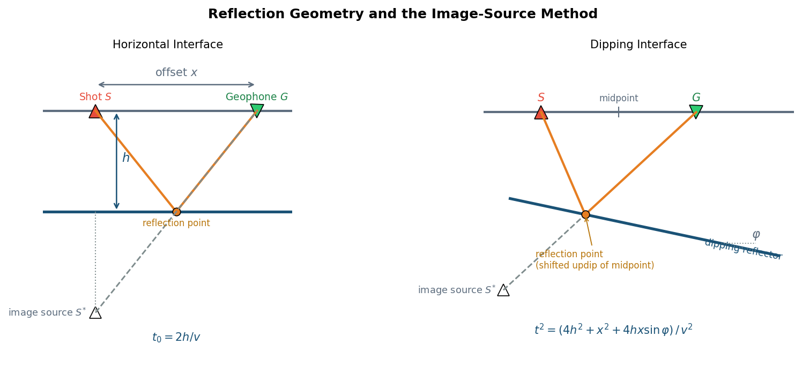
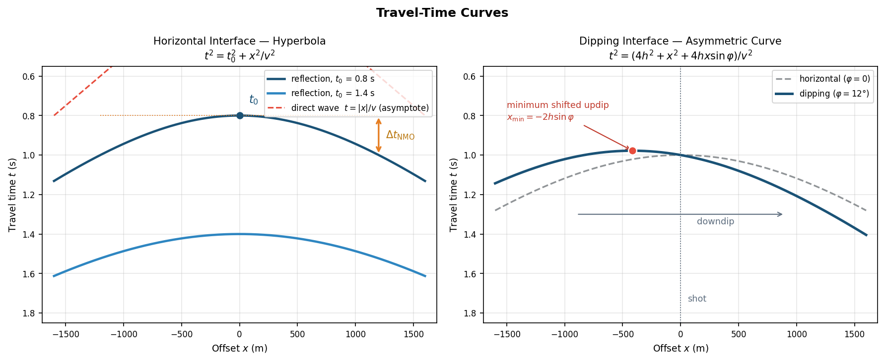
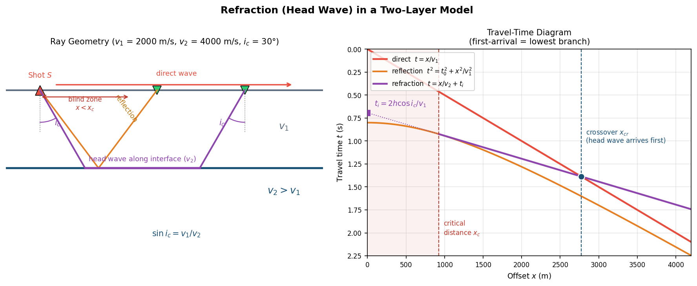
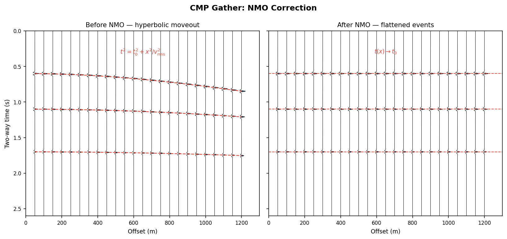
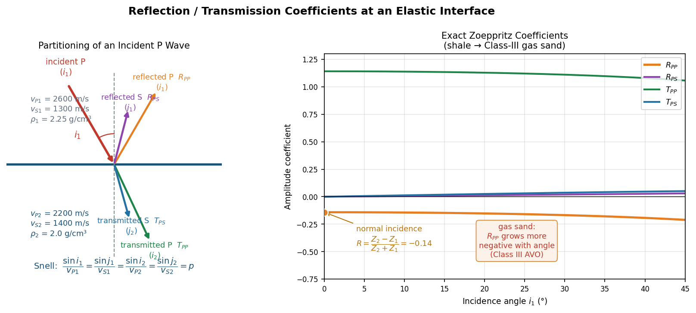
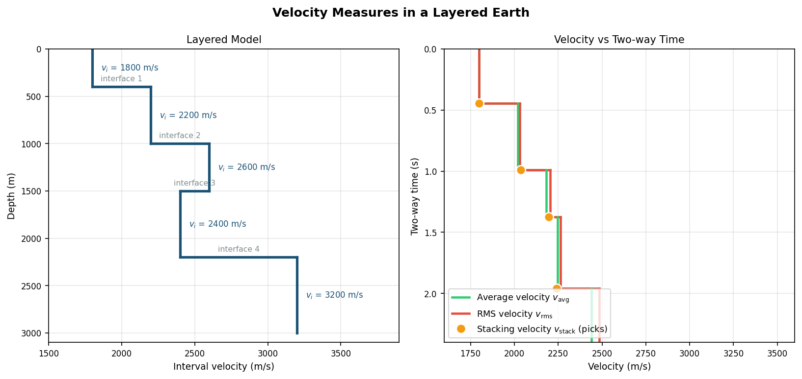
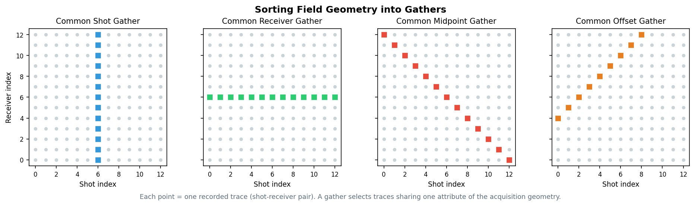

几何地震学：时距曲线、速度与道集¶
引言¶
几何地震学（geometrical seismology）研究地震波传播的运动学特征——旅行时、射线路径与观测几何，而不涉及振幅、相位等动力学信息。它是反射地震勘探的基石：从野外采集的原始记录到地下构造图像，每一步（动校正、速度分析、叠加、偏移）都建立在几何地震学的时距关系之上。
两个核心问题贯穿始终：
- 波走了多久？ —— 时距曲线（travel-time curve）描述旅行时随炮检距的变化；
- 怎么排列数据？ —— 道集（gather）定义了多道记录的组织方式，决定了后续处理能提取什么信息。
反射波时距曲线¶
水平界面：双曲线时距方程¶
对于速度为 \(v\) 的均匀介质中深度为 \(h\) 的水平反射界面，炮点-检波点间距（炮检距，offset）为 \(x\) 时，反射波旅行时满足：
其中 \(t_0 = 2h/v\) 为零炮检距（自激自收）双程旅行时。时距曲线是一条以 \(t\) 轴为对称轴的双曲线。

图 1：反射几何与虚震源法。左——水平界面：炮点 \(S\)、检波点 \(G\)、反射点位于中点正下方，虚震源 \(S^*\) 位于界面镜像处，反射射线路径等效于从 \(S^*\) 到 \(G\) 的直线；右——倾斜界面：反射点相对炮检中点向上倾方向偏移，虚震源为炮点关于倾斜界面的镜像。正常时差（Normal Moveout, NMO）定义为某炮检距处旅行时与零炮检距旅行时之差：
正常时差随炮检距平方增长、随深度（\(t_0\)）衰减——深部反射的双曲线更"平"。
倾斜界面：时距曲线不对称¶
当界面以倾角 \(\varphi\) 倾斜时，时距曲线变为：
双曲线的极小点偏离炮点，偏移方向和大小携带了界面倾角信息（下倾方向旅行时更小）。这也是单边放炮观测无法区分"界面倾斜"与"速度变化"的原因。

图 2：时距曲线。左——水平界面的双曲线族（两个 \(t_0\)），红色虚线为直达波 \(t=|x|/v\)，即双曲线的渐近线，橙色箭头指示正常时差 \(\Delta t_\text{NMO}\)；右——倾斜界面（\(\varphi = 12°\)）的不对称时距曲线（实线）与水平界面对称曲线（虚线）对比，极小点向上倾方向偏移至 \(x_\text{min}=-2h\sin\varphi\)。折射波（首波）时距曲线¶
当下伏介质速度大于上覆介质（\(v_2 > v_1\)）时，存在临界角：
以临界角入射的射线进入下层后沿界面以 \(v_2\) 滑行，再沿临界角折返地面，形成折射波（首波，head wave）。其时距曲线是一条直线：
其中 \(t_i\) 为截距时间（折射线延长线与 \(t\) 轴的交点）。两个关键距离：
- 临界距离 \(x_c = 2h\tan i_c\)：\(x < x_c\) 为盲区，折射波尚未返回地面；
- 超越距离（crossover）\(x_{cr} = 2h\sqrt{\dfrac{v_2+v_1}{v_2-v_1}}\)：\(x > x_{cr}\) 后，走高速路径的折射波反而最先到达，成为初至。

图 3：两层模型（\(v_1\) = 2000 m/s，\(v_2\) = 4000 m/s）中的折射波。左——射线几何：直达波（红）、反射波（橙）、以临界角 \(i_c\) 入射并沿界面滑行的首波（紫），\(x < x_c\) 为首波盲区；右——时距图：直达波直线、反射双曲线与折射直线三支，折射支在超越距离 \(x_{cr}\) 之后成为初至，截距时间 \(t_i\) 可用于反演界面深度。由折射时距曲线可以直接反演近地表结构：斜率给出 \(v_1\)、\(v_2\)，截距时间给出界面深度：
折射方法的前提与用途
折射波存在的必要条件是速度随深度增加（\(v_2 > v_1\)）；低速夹层（如低速含气层）对折射方法"隐身"。折射分析是初至拾取、近地表速度建模与静校正的基础——陆地资料的低降速带校正正是依赖初至折射信息。
从射线到模态：临界折射的另一面
临界折射（首波）是射线图景的描述；同一物理过程在模态图景中对应面波的临界模态：相速度恰好等于体波速度时，本征位移在半空间中不再指数衰减而保持常数，与首波的能量分布直接对应。射线与模态在此交汇。
动校正（NMO 校正）¶
动校正的目的是把每个炮检距处的反射时间 \(t(x)\) 拉回零炮检距时间 \(t_0\)，使同一反射界面的同相轴校平，从而可以同相叠加：

图 5：合成 CMP 道集的 NMO 校正。左——校正前，三条反射同相轴呈双曲线（红色虚线为理论时距曲线）；右——用正确的 \(v_\text{rms}\) 动校正后，同相轴被拉平到各自的 \(t_0\)，可以同相叠加。动校正拉伸（NMO stretch）
动校正是时间轴的非线性压缩/拉伸：浅层、大炮检距处波形被明显拉长（频率降低），通常按拉伸百分比对这部分数据做切除（mute），否则会污染叠加结果的浅层高频成分。
反射与透射系数（RT）¶
时距曲线告诉我们波何时到达；反射/透射系数则回答波携带多少能量回来——这是振幅解释与储层预测的物理基础。
法向入射：阻抗对比公式¶
平面波垂直入射到两种介质的分界面时，由界面上位移连续与应力连续两个边界条件，可直接解出反射系数与透射系数：
其中 \(Z = \rho v\) 为波阻抗（acoustic impedance）。注意：
- 符号约定：\(Z_2 < Z_1\)（如页岩→含气砂岩）时 \(R < 0\)，反射波形发生极性反转；\(R>0\) 时极性不变；
- \(T\) 可以大于 1（振幅意义），不违反能量守恒——真正的约束是能量系数：
- 一般沉积界面的 \(|R|\) 只有 \(0.05\)–\(0.15\)；含气砂岩顶面可达 \(0.2\)–\(0.3\)，这是"亮点"技术的物理来源。
阻抗对比不只决定反射振幅
同一个阻抗对比 \(Z_2/Z_1\) 也主控着单台噪声谱比的形态：HVSR 与 Rayleigh 波椭圆率（RWE）的峰值频率与振幅直接由表层与下伏半空间的阻抗对比决定——反射波方法"从上面照"，谱比方法"站在界面上听"，二者约束的是同一物性。见面波与尾波：单台方法 HVSR 与 RWE。
斜入射：波型转换与 Zoeppritz 方程¶
P 波以角度 \(i_1\) 斜入射弹性分界面时，会激发四个波：反射 P、转换反射 S（\(R_{PS}\)）、透射 P、转换透射 S（\(T_{PS}\)）。各波的角度由 Snell 定律（射线参数 \(p\) 守恒）联系：
由于 \(v_S < v_P\)，转换波总是更靠近法线（\(j_1 < i_1\)）。
振幅由四个边界条件确定——界面上法向/切向位移连续、法向/切向应力连续，构成关于 \([R_{PP}, R_{PS}, T_{PP}, T_{PS}]\) 的 4×4 线性方程组，即 Zoeppritz 方程（Zoeppritz, 1919）。用位函数写出各波的位移与应力并代入边界条件，方程组形如：
其中 \(\eta_{P} = \cos i / v_P\)、\(\eta_S = \cos j / v_S\) 为垂直慢度，\(\mu = \rho v_S^2\) 为剪切模量。法向入射（\(p = 0\)）时方程组退化为对角形式，\(R_{PS} = T_{PS} = 0\)，并立即给出上文的阻抗公式——这是检验任何 Zoeppritz 数值实现的基准之一（另一基准是能量守恒 \(E_R + E_T = 1\)）。

图 4：弹性分界面上的能量分配。左——入射 P 波分解为反射 P/S 与透射 P/S 四个波，转换波更靠近法线；右——页岩→Ⅲ类含气砂岩模型的精确 Zoeppritz 系数随入射角的变化：\(R_{PP}\) 在法向为 \(-0.14\)（极性反转），并随角度变得更负（Ⅲ类 AVO 特征）；转换波能量在法向为零、随角度缓慢增长。弱反差近似与 AVO¶
Zoeppritz 方程没有简洁的解析解。对弱反差界面（\(\Delta v / \bar{v}\)、\(\Delta \rho / \bar{\rho}\) 等小量），Aki & Richards（1980）给出线性化近似；其最常用的形式是 Shuey 三项式：
- \(A = R_0\)：法向反射系数，由阻抗对比决定；
- \(B\)：主要由泊松比差异 \(\Delta\sigma\) 决定——含气砂岩泊松比显著低于围岩，使 \(|R|\) 随炮检距增大（振幅随偏移距增强，AVO 亮点特征）；
- \(C\)：与速度对比相关，大角度项，实际资料信噪比低时常被舍去。
对 CMP 道集逐道拟合 \(A\)、\(B\) 即截距-梯度（intercept-gradient）分析，是 AVO 储层预测的工业标准流程。这也是为什么共偏移距道集和保幅处理在储层研究中如此重要——角度信息必须通过采集几何保留下来。
与折射一节的呼应
当 \(v_{P2} > v_{P1}\) 且入射角达到临界角 \(i_c\)（\(\sin i_c = v_{P1}/v_{P2}\)）时，透射 P 波转为沿界面滑行的首波，\(R_{PP}\) 变为复数（振幅趋于 1、附加相移）——Zoeppritz 系数在临界角附近的行为把反射与折射两个世界联系了起来。
地震勘探中的各种速度¶
"速度"在地震资料处理中并不是唯一的概念。理解每种速度的定义、来源与用途，是正确使用它们的前提。
平均速度（Average Velocity）¶
即总深度除以单程垂直旅行时。它回答"波垂直走这一段平均多快"，是时深转换的标准工具（VSP、声波测井标定的就是这个速度）。
均方根速度（RMS Velocity）¶
其中 \(\Delta t_i\) 为第 \(i\) 层的单程垂直旅行时。均方根速度是时间加权的均方根，高速层权重更大，因此：
等号仅在均匀介质中成立。物理意义：在小炮检距近似下，水平层状介质的反射时距曲线仍是双曲线，只要把均匀介质速度换成 \(v_\text{rms}\)——这正是 Dix（1955）经典结果。
叠加速度（Stacking Velocity）¶
叠加速度 \(v_\text{stack}\) 是从数据里"拟合"出来的：对 CMP 道集用一系列候选速度做动校正并叠加（或计算相似性度量 semblance），使叠加能量最大的那个速度就是叠加速度。由双曲线拟合的定义：
三者关系：
- 水平层状、小炮检距：\(v_\text{stack} \approx v_\text{rms}\)，这是连接"处理"与"地质"的桥梁；
- 界面倾斜或速度横向变化时，\(v_\text{stack}\) 会系统性偏离 \(v_\text{rms}\)（倾斜界面 \(v_\text{stack} = v/\cos\varphi\)），此时直接 Dix 反演会出错。
层速度与 Dix 公式¶
由相邻两个界面的均方根速度反推第 \(n\) 层的层速度（interval velocity）：
其中 \(t_n\) 为第 \(n\) 个界面的零炮检距双程旅行时。Dix 公式是速度谱 → 层速度 → 岩性解释（如识别高速盐层、低速气藏）的关键一步。
Dix 反演的脆弱性
Dix 公式对小误差非常敏感：\(v_n\) 依赖于两个大数之差（\(v_{\text{rms},n}^2 t_n\) 与 \(v_{\text{rms},n-1}^2 t_{n-1}\)），薄层（\(t_n - t_{n-1}\) 小）时分母放大误差。层越薄、拾取噪声越大，层速度估计越不可靠。

图 6：左——五层水平层状模型的层速度；右——对应的平均速度（绿）与均方根速度（红）随双程旅行时的变化，橙色圆点为速度谱拾取的叠加速度。可见 \(v_\text{stack} \approx v_\text{rms} \geq v_\text{avg}\)，且低速夹层（第 4 层 2400 m/s）处平均速度被明显拉低。速度概念速查表¶
| 速度 | 定义来源 | 回答的问题 | 典型用途 |
|---|---|---|---|
| 层速度 \(v_i\) | 介质本身 | 这一层传播多快？ | 岩性解释、储层预测 |
| 平均速度 \(v_\text{avg}\) | 深度 ÷ 垂直时间 | 垂直走这段平均多快？ | 时深转换 |
| 均方根速度 \(v_\text{rms}\) | 层速度的时间加权均方根 | 小炮检距双曲线的等效速度？ | 理论分析、Dix 反演输入 |
| 叠加速度 \(v_\text{stack}\) | 数据双曲线拟合 | 什么速度让道集校得最平？ | 动校正、叠加 |
速度家族的另一支：面波相速度
上表中的速度都来自反射走时拟合，本质是 P 波信息；而面波方法直接从频散曲线 \(c(f)\) 反演 S 波速度结构，对浅部横波速度尤为敏感。二者结合可同时约束 \(V_P\) 与 \(V_S\)（进而估计泊松比等岩性参数），见面波与尾波：频散曲线的提取与反演。
观测系统与道集¶
多次覆盖与道集分类¶
数字地震仪记录的是"炮 × 检波点"二维网格上的大量单道记录。道集（gather）就是按某种共同属性把道分组的切片方式。同一份野外数据可以重排成不同道集，各司其职：

图 7：炮点-检波点网格上的道集选取。每个点代表一道记录；高亮道分别构成共炮点（竖线）、共接收点（横线）、共中心点（反对角线，\(s + g\) 恒定）与共偏移距（正对角线，\(g - s\) 恒定）道集。| 道集 | 共同属性 | 同相轴形态（水平层） | 主要用途 |
|---|---|---|---|
| 共炮点道集（CSG / shot gather） | 同一炮 | 双曲线 | 野外质量监控、初至拾取、折射分析 |
| 共接收点道集（CRG） | 同一检波点 | 双曲线 | 检波点一致性、静校正、接收函数 |
| 共中心点道集（CMP / CDP gather） | 同一炮检中点 | 双曲线 | 速度分析、动校正与叠加的主战场 |
| 共偏移距道集（COG） | 同一炮检距 | 近似水平 | 偏移前处理、AVO、规则化（regularization） |
共中心点道集：核心中的核心¶
CMP 道集把中点相同的各道放在一起。对水平界面，中点相同意味着反射点相同（此时 CMP = CRP，共反射点），道集中每一道都是对地下同一点的重复采样——这正是"多次覆盖"思想的精髓：
- 动校正消除炮检距引起的时差，把同相轴校平；
- 叠加把 \(N\) 道同相相加，随机噪声按 \(\sqrt{N}\) 衰减，反射信号增强 \(N\) 倍，信噪比提升 \(\sqrt{N}\) 倍；
- 速度分析沿时间滑动做速度扫描（semblance 谱），逐 \(t_0\) 拾取 \(v_\text{stack}\)。
覆盖次数（fold）：每个 CMP 包含的道数。对单边放炮排列：
其中 \(N\) 为接收道数、\(\Delta g\) 为道间距、\(\Delta s\) 为炮点距。典型陆地勘探覆盖 30–120 次；覆盖次数越高，叠加压制噪声和多次波的能力越强，但成本也越高。
水平界面的幸运巧合
CMP 方法的有效性建立在"中点相同 ≈ 反射点相同"之上。界面倾斜时反射点会沿下倾方向发散（reflection point dispersal），复杂构造区 CMP 道集实际混合了不同反射点的信息——这正是需要叠前偏移（prestack migration）而不是简单叠加的根本原因。
从道集到叠加剖面：处理流程骨架¶
野外记录 (shot gathers)
│ 重排（sort）
▼
CMP 道集 ──► 速度分析（semblance 扫描拾取 v_stack）
│ │
▼ ▼
动校正 ◄── 叠加速度场
│
▼
叠加 ──► 叠加剖面（自激自收近似）
│
▼
偏移 ──► 构造成像
小结¶
- 水平界面反射时距曲线是双曲线 \(t^2 = t_0^2 + x^2/v^2\)，正常时差随炮检距平方增长；
- 折射波要求 \(v_2 > v_1\)，时距曲线为直线 \(t = x/v_2 + t_i\)，超越距离后成为初至，由斜率和截距可反演近地表速度结构与界面深度；
- 分界面上的反射/透射系数由 Zoeppritz 方程（位移与应力连续的 4×4 方程组）给出；法向入射退化为阻抗对比公式 \(R = (Z_2 - Z_1)/(Z_2 + Z_1)\)，Shuey 三项式近似把角度依赖性归结为截距-梯度，构成 AVO 分析的基础；
- \(v_\text{avg}\) 用于时深转换，\(v_\text{rms}\) 是小炮检距双曲线的等效速度，\(v_\text{stack}\) 由数据拟合得到，三者满足 \(v_\text{stack} \approx v_\text{rms} \geq v_\text{avg}\)；
- Dix 公式把均方根速度转换为层速度，但对薄层和拾取误差敏感；
- 道集是按采集几何属性对道的重组：共炮点用于监控，共中心点道集是速度分析与叠加的核心；
- 多次覆盖 + 动校正 + 叠加使信噪比按 \(\sqrt{N}\) 提升，但构造复杂时必须让位于叠前偏移。
参考文献¶
- Dix, C. H. (1955). Seismic velocities from surface measurements. Geophysics, 20(1), 68–86.
- Yilmaz, Ö. (2001). Seismic Data Analysis: Processing, Inversion, and Interpretation of Seismic Data. SEG.
- Sheriff, R. E., & Geldart, L. P. (1995). Exploration Seismology (2nd ed.). Cambridge University Press.
- Zoeppritz, K. (1919). Erdbebenwellen VII B: Über Reflexion und Durchgang seismischer Wellen durch Unstetigkeitsflächen. Nachr. Ges. Wiss. Göttingen, 66–84.
- Aki, K., & Richards, P. G. (1980). Quantitative Seismology: Theory and Methods. W. H. Freeman.
- Shuey, R. T. (1985). A simplification of the Zoeppritz equations. Geophysics, 50(4), 609–614.